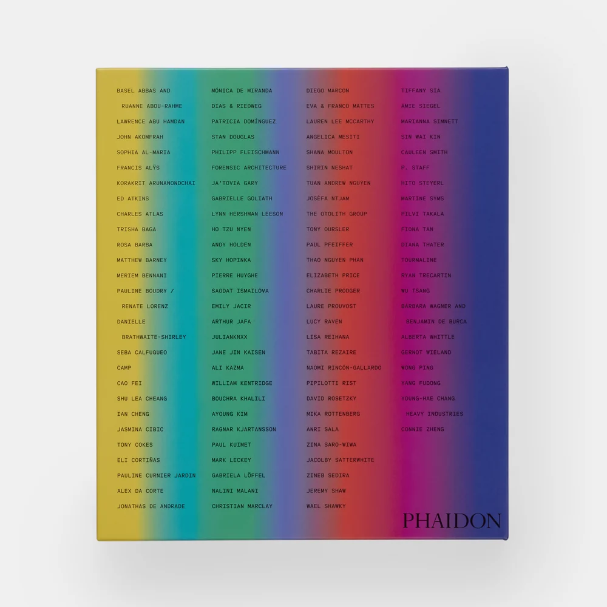

Vitamin V
Vitamin V: Video and the Moving Image in Contemporary Art was published by Phaidon in 2025. Its back cover lists 102 artists, duos, and collectives, who were nominated by a panel of curators, writers, and artists. Erika Balsom wrote the introduction, a history of video art since the 1960s.
Most of these artists show their work in galleries rather than cinemas, so this page is built differently from the other references. It lists the artists instead of films, and gives for each one where to read about them and where their work can be seen. Every link was checked in September 2026. Eight of the artists have work in this collection.

Isometric map
- Vitamin V map — the artists as an isometric map by method, distance from cinema, and what can be watched from home
Viewing platforms
The work of 43 artists can be watched free online, often on their own Vimeo pages. Distributors such as EAI and Video Data Bank rent to institutions, and MUBI needs a subscription. For 43 artists nothing was found online, so their work is seen in exhibitions.
| Platform | Artists | Who |
|---|---|---|
| Ubuweb | 27 | Alex Da Corte, Arthur Jafa, Bouchra Khalili, Cao Fei, Christian Marclay, Ed Atkins, Elizabeth Price, Emily Jacir, Fiona Tan, Forensic Architecture, Hito Steyerl, John Akomfrah, Lawrence Abu Hamdan, Mark Leckey, Matthew Barney, Paul Pfeiffer, Pipilotti Rist, Ragnar Kjartansson, Ryan Trecartin, Shana Moulton, Shirin Neshat, Shu Lea Cheang, Sky Hopinka, Sophia Al-Maria, Stan Douglas, Tony Cokes, Tony Oursler |
| Video Data Bank | 13 | Cauleen Smith, Charles Atlas, Francis Alÿs, Lucy Raven, Lynn Hershman Leeson, Martine Syms, Mónica de Miranda, Rosa Barba, Shana Moulton, Shu Lea Cheang, Sky Hopinka, Tony Cokes, Tony Oursler |
| Vimeo | 12 | Dias & Riedweg, Forensic Architecture, Hito Steyerl, Jacolby Satterwhite, Meriem Bennani, Paul Kuimet, Rosa Barba, Seba Calfuqueo, Shana Moulton, Sky Hopinka, Tabita Rezaire, Tuấn Andrew Nguyễn |
| LUX | 11 | Alberta Whittle, Charlie Prodger, Ed Atkins, Elizabeth Price, John Akomfrah, Laure Prouvost, Lynn Hershman Leeson, Mark Leckey, P. Staff, The Otolith Group, Yang Fudong |
| EAI | 11 | Charles Atlas, Francis Alÿs, Lynn Hershman Leeson, Pierre Huyghe, Pipilotti Rist, Ryan Trecartin, Shana Moulton, Tony Cokes, Tony Oursler, William Kentridge, Wu Tsang |
| YouTube | 7 | Connie Zheng, Francis Alÿs, Ja'Tovia Gary, Ryan Trecartin, Tabita Rezaire, Tony Oursler, Wong Ping |
| artist's site | 2 | Francis Alÿs, Lawrence Abu Hamdan |
| their site | 2 | Forensic Architecture, YOUNG-HAE CHANG HEAVY INDUSTRIES |
| BFI Player | 1 | John Akomfrah |
| BLACKTRANSARCHIVE.COM | 1 | Danielle Brathwaite-Shirley |
| Pad.ma | 1 | CAMP |
| Guggenheim | 1 | Shu Lea Cheang |
| Media Art Net | 1 | Stan Douglas |
| cdosea.org | 1 | Ho Tzu Nyen |
| Tor Browser, via their site | 1 | Eva & Franco Mattes |
| MUBI | 1 | Martine Syms |
The artists 102
-
Basel Abbas and Ruanne Abou-Rahme
Make multi-channel video, sound and performance installations that layer archival material with their own footage and text, about Palestinian displacement, colonial violence and collective loss.
Read → Letterboxd (Ruanne Abou-Rahme) · Official site · Wikipedia · Interview, BOMB Magazine (2022)
Watch → shown in exhibitions; no whole work found online
Excerpts → Vimeo
-
Lawrence Abu Hamdan (2 queued)
Makes films, audio installations, lectures and forensic audio reports that analyse sound and listening as evidence in cases of human rights and legal dispute.
Read → Letterboxd · Official site · Wikipedia · Interview, BOMB Magazine (2023) · Interview, Apollo
Watch → artist's site (free) · Ubuweb (free)
-
John Akomfrah (1 queued)
Makes essay films and multi-screen video installations that set archive footage against newly shot material and sound, about migration, the Black diaspora, memory and ecology; co-founded Black Audio Film Collective and Smoking Dogs Films.
Read → Letterboxd · Smoking Dogs Films (studio) · Wikipedia · MUBI · Interview, Senses of Cinema (2016)
Watch → BFI Player (rental) · LUX (institutions only) · Ubuweb (free)
-
Sophia Al-Maria
Writer and artist who makes video installations, short films and television drawing on her Qatari and American upbringing; coined the term 'Gulf Futurism' for the rapid, oil-funded modernisation of Gulf cities.
Read → Letterboxd · Wikipedia · Essay, 'Back to the Futurist', Whitney Museum (2016) · Interview, Afterall · Interview with Erika Balsom, Art in America
Watch → Ubuweb (free)
-
Francis Alÿs
Records walks, actions and collective performances, often in cities and border zones, as short videos alongside paintings and drawings; since 1999 has filmed children's games around the world for the ongoing series Children's Games.
Read → Letterboxd · Official site · Wikipedia · Essay, 'State of Play', Senses of Cinema (2025) · In the Studio, Art21
Watch → YouTube (free) · artist's site (free) · EAI (institutions only) · Video Data Bank (institutions only)
-
Korakrit Arunanondchai
Makes videos shown inside installation environments with painting, sculpture and performance, often in series (with history in a room filled with people with funny names; Songs for dying / Songs for living), about memory, loss, animism and Thai history.
Read → Letterboxd · Wikipedia · Interview, The White Review · Profile, The Art Newspaper (2021)
Watch → shown in exhibitions; no whole work found online
-
Ed Atkins
Makes high-definition videos with computer-generated avatars animated by motion capture of his own face and body, delivering written monologues, alongside text, drawing and performance.
Read → Letterboxd · Wikipedia · Video interview 'Something is Missing', Louisiana Channel (2017) · Interview on Hisser and Safe Conduct, Dazed
-
Charles Atlas
Makes film and video for and with dancers and performers, from long collaborations with Merce Cunningham to documentaries and video portraits of Leigh Bowery, Michael Clark and downtown New York performers, and live video mixes.
Read → Letterboxd · Wikipedia · Biography, Electronic Arts Intermix
Watch → EAI (institutions only) · Video Data Bank (institutions only)
-
Trisha Baga
Makes installations in which 2D and 3D video projections are layered over found objects, ceramics and painted surfaces, cutting home footage together with film, television and internet material.
Read → Letterboxd · Wikipedia · Interview, Juliet Art Magazine · Review of MORE at PICA, Willamette Week (2026)
Watch → shown in exhibitions; no whole work found online
-
Rosa Barba
Makes 16mm and 35mm films of landscapes and sites, and sculptural installations built from projectors and film strips, treating cinema itself as material.
Read → Letterboxd · Official site · Wikipedia · Interview with Joan Jonas, BOMB Magazine (2015) · Essay, 'Rosa Barba: Changing Cinema', Afterall
Watch → Video Data Bank (institutions only) · Vimeo (free)
-
Matthew Barney (2 seen)
Makes feature-length films combined with sculpture, drawing and performance, built on invented mythologies of the body, sexuality and geography, from The Cremaster Cycle (1994-2002) to Redoubt (2018-21).
Read → Letterboxd · Official site (Cremaster) · Wikipedia · Conversation with Gaspar Noé, BOMB Magazine (2014) · Review, The Brooklyn Rail (2010)
Watch → Ubuweb (free)
-
Meriem Bennani
Makes video installations, animation and projection-mapped sculpture that mix documentary, reality-TV formats and 3D animation, often about Morocco and diaspora; with Orian Barki made the Instagram series 2 Lizards and the animated feature Bouchra.
Read → Letterboxd · Official site · Wikipedia · Art21 artist page · On the animated feature Bouchra, Cartoon Brew
Watch → Vimeo (free)
-
Pauline Boudry / Renate Lorenz
Film performances staged for the camera, often with queer and trans performers restaging archival material, and show them inside installations of sculpture, curtains, stages and smoke.
Read → Letterboxd · Official site · Wikipedia · Essay by Elizabeth Freeman on transtemporal drag, e-flux journal #28 · On Telepathic Improvisation, Walker Reader
Watch → shown in exhibitions; no whole work found online
-
Danielle Brathwaite-Shirley
Makes interactive video games, animation and live performance, playable online and in installations, that archive Black trans lives and ask players to make choices about their own position.
Read → Letterboxd · Official site · Wikipedia · Profile, Metal Magazine · THE DELUSION, Serpentine (2025)
Watch → BLACKTRANSARCHIVE.COM (free)
-
Seba Calfuqueo
Mapuche artist who makes video-performances, ceramics and installations, with videos in Mapudungun that retell Mapuche stories about bodies, water and land.
Read → Letterboxd · Official site · Wikipedia (Spanish) · Conversation with Macarena Gómez-Barris, Serpentine (2021) · Interview, My Art Guides
Watch → Vimeo (free)
-
CAMP
Studio founded in 2007 by Shaina Anand, Sanjay Bhangar and Ashok Sukumaran that makes films, installations and online archives from infrastructure such as CCTV cameras, electricity, shipping and video archives, including the feature From Gulf to Gulf to Gulf (2013), made with sailors' phone footage.
Read → Letterboxd (Shaina Anand) · Official site · MUBI (Shaina Anand) · Interview with Shaina Anand, Furtherfield (2017) · From Gulf to Gulf to Gulf, CAMP
Watch → Pad.ma (free)
-
Cao Fei
Makes videos, films and multimedia installations about everyday life in a rapidly changing China, from factory workers and cosplayers to RMB City, a city she built in the virtual world Second Life.
Read → Letterboxd · Official site · Wikipedia · MUBI · Studio visit, Asian Art Newspaper (2017) · On Rabid Dogs (2002), Hyperallergic
Watch → Ubuweb (free)
-
Shu Lea Cheang
Makes queer science-fiction features, videos and web-based works that deal with sexual politics, surveillance and the body in networked media.
Read → Letterboxd · Official site (Mauvais Contact, personal agenda) · Wikipedia · On 3x3x6, Taiwan Pavilion, Venice Biennale, Hyperallergic (2019) · Restoring Brandon, Guggenheim Checklist blog
Watch → Ubuweb (free) · Guggenheim (free) · Video Data Bank (institutions only)
-
Ian Cheng
Makes live simulations built in game engines, in which AI-driven agents act out open-ended narratives that never play the same way twice.
Read → Official site · Wikipedia · The Cyborg Anthropologist, interview, ARTnews (2016) · BOB, Emissaries, Serpentine Galleries video and text (2018)
Watch → shown in exhibitions; no whole work found online
-
Jasmina Cibic
Makes staged films, installations and performances that rework archival speeches and state architecture to examine how nations use culture as soft power.
Read → Letterboxd · Official site · Wikipedia · Interview on winning the Jarman Award, The Guardian (2021)
Watch → shown in exhibitions; no whole work found online
Excerpts → Vimeo
-
Tony Cokes
Makes text-based videos in which fragments of found writing appear on flat coloured screens over pop and dance music, addressing race, media and power.
Read → Letterboxd · Wikipedia · If UR Reading This It's 2 Late: Vol 1, exhibition text, Goldsmiths CCA (2019) · Review of On Non-Visibility, Artforum Critics' Picks (2018)
Watch → Ubuweb (free) · EAI (institutions only) · Video Data Bank (institutions only)
-
Eli Cortiñas
Makes found-footage video collages from Hollywood films, magazines, adverts and YouTube, re-edited with her own footage to take apart dominant narratives.
Read → Letterboxd · Wikipedia (German) · Remixers Never Die, exhibition text, CAC Vilnius (2018) · Artist talk, 2 Days of Video Art, Schirn Frankfurt (video)
Watch → shown in exhibitions; no whole work found online
-
Pauline Curnier Jardin
Makes films, film installations and performances that restage saints, goddesses and pagan and Catholic rites, often with non-professional casts.
Read → Letterboxd · Official site · Wikipedia · List Projects exhibition text, MIT List Visual Arts Center
Watch → shown in exhibitions; no whole work found online
-
Alex Da Corte
Makes brightly coloured videos, installations and sculptures in which he performs in costume as pop-culture and art-historical figures, drawing on consumer objects and music.
Read → Letterboxd · Official site · Wikipedia · Interview, Interview Magazine · Top Ten list, Artforum · Dancing Around Delusion, short documentary (Vimeo)
Watch → Ubuweb (free)
-
Jonathas de Andrade
Makes films, photographs and installations with workers and communities in north-eastern Brazil, borrowing ethnographic conventions to stage invented rituals.
Read → Letterboxd · Official site · Wikipedia (Portuguese) · O Peixe: A Parable of Extinction, essay, Third Text · Studio visit and interview, Cultured (2025)
Watch → shown in exhibitions; no whole work found online
Excerpts → Vimeo
-
Mónica de Miranda
Makes photographs, short films and installations on postcolonial geography, memory and the Angolan diaspora, often filmed along rivers, islands and ruined buildings in Angola and Lisbon.
Read → Letterboxd · Official site · Wikipedia · Panoramic in Moving Fragments, essay, BUALA · My best photograph: a ruined hotel in Angola, The Guardian (2017) · Path to the Stars, exhibition text, Blanton Museum of Art
Watch → Video Data Bank (institutions only)
-
Dias & Riedweg
Mauricio Dias and Walter Riedweg make video installations and public projects built from long collaborations and interviews with marginalised groups, such as street children in Rio and migrant sex workers in Barcelona.
Read → Letterboxd (Walter Riedweg) · Official site · Wikipedia (German) · Reise an die Ränder des Lebens, SRF Sternstunde Kunst documentary (2014, German)
Watch → Vimeo (free)
-
Patricia Domínguez
Makes video installations, watercolours and sculptural assemblages drawing on ethnobotany, healing rituals and myth, set against corporate wellness and digital capitalism.
Read → Letterboxd · Sensing the Cosmos, interview, Berlin Art Link (2024) · Terrestrial Technologies, interview, The Couch (Het HEM) · Artist page and biography, Cecilia Brunson Projects
Watch → shown in exhibitions; no whole work found online
-
Stan Douglas
Makes films, multi-screen installations and staged photographs that re-examine specific places and historical moments, often using recombinant editing so the work never repeats the same way.
Read → Letterboxd · Wikipedia · Artist page and biography, David Zwirner · Monodramas and Television Spots, Media Art Net · Ghostlight exhibition text, CCS Bard
Watch → Ubuweb (free) · Media Art Net (free)
-
Philipp Fleischmann
Makes short, silent 35mm films without a conventional camera, exposing film strips directly in hand-built, site-specific apparatuses inside art institutions such as the Vienna Secession.
Read → Letterboxd · Interview, Film Comment · Studio visit: 'I wanted to disempower the camera', Collectors Agenda · Beyond the Frame, (S8) Mostra de Cinema Periférico (2022)
Watch → shown in exhibitions; no whole work found online
-
Forensic Architecture
A research group led by Eyal Weizman that reconstructs incidents of state and corporate violence with 3D models, spatial analysis and open-source evidence, published as video investigations, exhibitions and legal submissions.
Read → Official site · Wikipedia · Profile of Eyal Weizman and the group, The Guardian (2018)
Watch → their site (free) · Vimeo (free) · Ubuweb (free)
-
Ja'Tovia Gary
Makes films and installations that combine archive footage, street interviews and camera-less, hand-worked celluloid, centred on Black women's subjectivity and safety.
Read → Letterboxd · Official site · Wikipedia · Sound Garden, Ayanna Dozier on The Giverny Document, Artforum · Inheriting Impressionism, Rachel Cohen, The Yale Review (2024) · The Film World Doesn't Know What to Make of Ja'Tovia Gary, Cultured (2023)
Watch → YouTube (free)
Excerpts → Vimeo
-
Gabrielle Goliath
Makes durational performances and multi-channel sound and video installations that commemorate victims of gendered and queerphobic violence and centre survivors' non-verbal testimony.
Read → Official site · Wikipedia · Working in Trauma's Wake, ArtReview · In conversation with Amadour, The Brooklyn Rail (2022) · On the cancelled 2026 Venice Biennale entry, The Guardian (2026)
Watch → shown in exhibitions; no whole work found online
-
Lynn Hershman Leeson
Makes video diaries, interactive works, feature films and documentaries about identity, surveillance and artificial life, including the fictional persona Roberta Breitmore and the videodisc Lorna.
Read → Letterboxd · Official site · Wikipedia · Review of Origins of the Species (Part 2), Modern Art Oxford, The Guardian (2015) · Lorna (1979-84), project page on the artist's site
Watch → EAI (institutions only) · LUX (institutions only) · Video Data Bank (institutions only)
-
Ho Tzu Nyen
Makes films, video installations, performances and VR works that examine the history, politics and religion of Southeast Asia through fact and myth.
Read → Letterboxd · The Critical Dictionary of Southeast Asia (project site) · Wikipedia
Watch → cdosea.org (free)
-
Andy Holden
Works across sculpture, music, performance, animation and multi-screen video, starting from personal material to reach philosophical questions, as in the hour-long animated lecture Laws of Motion in a Cartoon Landscape.
Read → Official site · Wikipedia
Watch → shown in exhibitions; no whole work found online
Excerpts → YouTube
-
Sky Hopinka (1 seen)
Makes short experimental films and video installations, and one feature, about homeland, landscape and the relation between language and culture, drawing on his Ho-Chunk background.
Read → Letterboxd · Official site · Wikipedia
Watch → Vimeo 2 (free) · Ubuweb (free) · Video Data Bank (institutions only)
-
Pierre Huyghe
Makes films, sculptures, public interventions and living systems that combine biological and technological elements, treating the exhibition as an environment that changes on its own.
Read → Letterboxd · Wikipedia
Watch → EAI (institutions only)
-
Saodat Ismailova
Makes feature films, multi-channel video installations and performances drawing on Central Asian history, women's histories and regional folklore.
Read → Letterboxd · Official site · Wikipedia
Watch → shown in exhibitions; no whole work found online
-
Emily Jacir
Works across film, video, photography, installation and performance on displacement, movement and silenced Palestinian histories, often through acts she carries out for others.
Read → Letterboxd · Wikipedia
Watch → Ubuweb (free)
-
Arthur Jafa (4 seen, 1 queued)
Cinematographer and video artist who edits found footage and music into video essays on Black American life, alongside cinematography for films and music videos.
Read → Letterboxd · Wikipedia
Watch → Ubuweb (free)
-
Julianknxx
Poet and filmmaker whose works begin as poems and become films, choral performances and installations, built from oral accounts of inheritance, loss and belonging in the West African diaspora.
Read → Letterboxd · Video interview on In Praise of Still Boys, Tate (2024) · Artist page and Chorus in Rememory of Flight essays, WePresent
Watch → shown in exhibitions; no whole work found online
-
Jane Jin Kaisen
Makes video installations and experimental narrative films, much of it on the history of Jeju Island and the anticolonial uprising there in 1948, alongside photography, performance and text.
Read → Letterboxd · Official site · Wikipedia
Watch → shown in exhibitions; no whole work found online
Excerpts → Vimeo
-
Ali Kazma
Films people at work, in factories, workshops, studios, laboratories and prisons, in ongoing video series about production, labour and how the body is shaped and controlled.
Read → Letterboxd · Wikipedia
Watch → shown in exhibitions; no whole work found online
-
William Kentridge
Makes animated films by photographing charcoal drawings as he erases and redraws them on a single sheet, alongside prints, theatre and opera productions.
Read → Letterboxd · Official site (Kentridge Studio) · Wikipedia · Watching Room: recorded lectures and conversations, Kentridge Studio
Watch → EAI (institutions only)
-
Bouchra Khalili
Makes film and video installations, photographs and prints from oral histories and testimonies, often of migrants and stateless people, about suppressed histories and other ways of belonging.
Read → Letterboxd · Wikipedia
Watch → Ubuweb (free)
-
Ayoung Kim
Makes speculative-fiction videos that combine live action with game-engine animation, and related games, VR and sound works, such as the Delivery Dancer series about an algorithmically managed delivery rider in Seoul.
Read → Interview by Brian Droitcour, BOMB (2026) · Exhibition text, Delivery Dancer's Sphere, Institute of Modern Art, Brisbane (2025)
Watch → shown in exhibitions; no whole work found online
-
Ragnar Kjartansson
Makes durational performances and multi-screen video installations built on repetition, music and theatrical staging, such as the nine-screen The Visitors (2012).
Read → Letterboxd · Wikipedia
Watch → Ubuweb (free)
-
Paul Kuimet
Makes 16mm films and photographic installations about modernist architecture, materials such as steel and glass, and their ties to the development of capitalism.
Read → Letterboxd · Official site · Artist profile, Estonian Centre for Contemporary Art · Essay 'Paul Kuimet's Crepuscular Intentions' by Chris Sharp, on the artist's site
-
Mark Leckey
Makes collage films and installations from found footage, pop culture and music, such as Fiorucci Made Me Hardcore (1999), a compilation of British dance-scene footage from the 1970s to the 1990s.
Read → Letterboxd · Wikipedia
-
Gabriela Löffel
Makes long-term video installations about political and financial structures, moving from recorded documentation to interpretation and restaging, as in Inside (2019), on the Shanghai Free Trade Zone and the Geneva Freeport.
Read → Official site · Essay 'It Might Hurt, but Nevertheless' by Boris Buden, Documents d'artistes Genève (2023) · Artist page, videokunst.ch
Watch → shown in exhibitions; no whole work found online
-
Nalini Malani
Makes video plays, shadow plays of rotating painted cylinders and multi-projection installations drawing on the partition of India, myth and feminist concerns.
Read → Letterboxd · Official site · Wikipedia · Interview, The New York Times India Ink (2013) · Review, 'Postmodern Cassandra', The Brooklyn Rail (2009)
Watch → shown in exhibitions; no whole work found online
-
Christian Marclay
Cuts and loops found film footage, records and sound into video installations and performances, including The Clock, a 24-hour montage of film clips showing the time.
Read → Letterboxd · Wikipedia · 'The Hours', on the making of The Clock, The New Yorker (2012) · Artist page, Paula Cooper Gallery
Watch → Ubuweb (free)
-
Diego Marcon
Makes short films of CGI children, puppets and prosthetic-masked actors that borrow the archetypes and sentiment of popular film genres.
Read → Letterboxd · 'Grotesque Films of Puppets and Suspended Animation', Artforum · On The Parents' Room, CURA. · Artist page, Sadie Coles HQ
Watch → shown in exhibitions; no whole work found online
Excerpts → Vimeo
-
Eva & Franco Mattes
Make installations, videos and online interventions about what the internet does to its users, including videos of content moderators voiced by avatars and released only on the darknet.
Read → Official site (0100101110101101.org) · Wikipedia · Interview, 'Life After Death', Art21 Magazine (2010) · Review, 'Reality is Overrated', The Brooklyn Rail (2010)
Watch → Tor Browser, via their site (free)
Excerpts → Vimeo
-
Lauren Lee McCarthy
Makes performances and software in which she stands in for smart devices and AI, for example acting as a human home assistant watching participants round the clock in LAUREN.
Read → Letterboxd · Official site · Wikipedia · Interview on LAUREN, SCHIRN Mag
Watch → shown in exhibitions; no whole work found online
-
Angelica Mesiti
Films musicians, dancers and speakers of whistled and sign languages for multi-channel video and sound installations about non-verbal communication and gathering.
Read → Letterboxd · Official site · Wikipedia · Interview, The Guardian (2015)
Watch → shown in exhibitions; no whole work found online
Excerpts → Vimeo
-
Shana Moulton
Makes low-tech videos and live performances around her alter ego Cynthia, who seeks health and peace through new-age products, pills and home decor.
Read → Letterboxd · Wikipedia · Artist page with biography and screening notes, Electronic Arts Intermix
Watch → Vimeo (free) · Ubuweb (free) · EAI (institutions only) · Video Data Bank (institutions only)
-
Shirin Neshat
Makes photographs, two-screen video installations and feature films that set men against women, and public against private space, in Iranian and Islamic settings.
Read → Letterboxd · Wikipedia · Review of The Fury, The Brooklyn Rail (2023) · Artist page with bibliography, Gladstone Gallery
Watch → Ubuweb (free)
-
Tuấn Andrew Nguyễn
Makes moving-image works and sculptures that mix archive, testimony, fiction and the supernatural to retell unofficial histories of colonialism, war and displacement in Vietnam.
Read → Letterboxd · Official site · Wikipedia · In the studio, Art in America · Artist column on Crimes of Solidarity (2020), Artforum
Watch → Vimeo (by password)
-
Josèfa Ntjam
Builds films, photomontages and performances from internet imagery, archive photographs, natural-science illustration and AI-generated creatures, joining deep sea and outer space into Afro-diasporic creation myths.
Read → Letterboxd · Wikipedia (French) · The Interview, ArtReview · 'From deep sea to deep space', Art Basel · On swell of spæc(i)es, LAS Art Foundation
Watch → shown in exhibitions; no whole work found online
-
The Otolith Group
Anjalika Sagar and Kodwo Eshun's research-based essay films, installations and curatorial programmes, drawing on science fiction, archives and the cultures of the global south.
Read → Official site · Wikipedia (Kodwo Eshun; no page for the group) · Turner Prize 2010 artist page, Tate · Artist page with works in distribution, LUX
Watch → LUX (institutions only)
-
Tony Oursler
Made hand-built videotapes with painted sets and stop-motion in the 1980s, then installations projecting talking faces onto dolls, puppets and sculptural forms.
Read → Letterboxd · Official site · Wikipedia · Review of a mid-career survey, Artforum (2000)
Watch → Ubuweb (free) · YouTube (free) · EAI (institutions only) · Video Data Bank (institutions only)
-
Paul Pfeiffer
Digitally edits broadcast footage of boxing, basketball, concerts and films, erasing or isolating figures, and shows the results on small monitors and in installations.
Read → Letterboxd · Wikipedia · Exhibition text, Prologue to the Story of the Birth of Freedom, Guggenheim Bilbao · Artist page, Paula Cooper Gallery
Watch → Ubuweb (free)
-
Thảo Nguyên Phan
Makes films, paintings and installations that set myth, folktale and literature against the ecological and social changes along the Mekong River.
Read → Letterboxd · Wikipedia · Conversation with Zoe Butt on Mekong Mechanical, Vdrome · 'A voyage along the Mekong River', Apollo (Becoming Alluvium) · Review of Becoming Alluvium, Studio International
Watch → shown in exhibitions; no whole work found online
-
Elizabeth Price
Makes digital video essays from archive photographs, animation and motion graphics, driven by scrolling text, computerised narration and music, about the histories of artefacts, buildings and documents.
Read → Letterboxd · Official site · Wikipedia · Review, The Whitworth, Manchester, ArtReview (2020)
-
Charlie Prodger
Makes first-person moving-image works from camcorder, HD and iPhone footage of landscape, with spoken and written text on queer identity, language and the body; has more recently turned to drawing.
Read → Letterboxd · Wikipedia (as Charlotte Prodger) · On Stoneymollan Trail, The Guardian (2015) · Turner Prize 2018 page with TateShots film, Tate · Artist page on the recent drawings, Hollybush Gardens
Watch → LUX (institutions only)
-
Laure Prouvost
Makes fast-cut films with direct-address subtitles, tactile close-ups and invented family stories, set inside immersive installations built from tapestry, sculpture and found objects.
Read → Letterboxd · Official site · Wikipedia · Studio interview, ICA Bulletin · Wantee and Friends (Turner Prize 2013 work), Tate
Watch → LUX (institutions only)
-
Lucy Raven
Makes moving-image installations, photographic animation and 35mm films about industrial processes, resource extraction and the landscape of the American West.
Read → Letterboxd · Official site · Wikipedia · Rounds (Murderers Bar), Barbican exhibition text (2025)
Watch → Video Data Bank (institutions only)
-
Lisa Reihana
Makes panoramic multi-channel video installations, photography and public sculpture that restage early encounters between Europeans and Pacific peoples from Māori and Pacific viewpoints.
Read → Letterboxd · Official site (in Pursuit of Venus) · Wikipedia · Interview podcast, CIRCUIT Cast #23 with Mark Amery · On in Pursuit of Venus [infected], AGO Foyer (2024)
Watch → shown in exhibitions; no whole work found online
-
Tabita Rezaire
Makes net-art-style video essays and installations that treat digital networks, the body and ancestral knowledge as linked technologies, alongside work as a healer and yoga teacher.
Read → Letterboxd · Official site · Wikipedia · Deep Down Tidal (2017), Goodman Gallery work text
-
Naomi Rincón Gallardo
Makes performance-based videos with song, costume and handmade sets that draw on Mesoamerican cosmologies, speculative fiction and cuir (queer) feminism to stage counter-worlds to neo-colonial dispossession.
Read → Letterboxd · Artist profile, KADIST · The Backroom: process materials for Resiliencia Tlacuache, Museo Tamayo (2020)
Watch → shown in exhibitions; no whole work found online
-
Pipilotti Rist
Makes saturated, sound-tracked video projections and immersive installations about the body, nature and pop music, after early single-channel tapes that reworked the music video; also directed the feature Pepperminta (2009).
Read → Letterboxd · Official site (contacts and distributors) · Wikipedia · Interview, ArtAsiaPacific (2017) · Video interview at the Hayward Gallery, Louisiana Channel (2011)
-
David Rosetzky
Makes video portraits and installations, often with dancers, choreographers and actors, pairing polished advertising-like images with inner monologues about identity and relationships.
Read → Official site · Video works from the NGV Collection, NGV exhibition text (2025) · Artist profile, National Portrait Gallery (Australia)
Watch → shown in exhibitions; no whole work found online
-
Mika Rottenberg
Makes videos shown inside built sculptural installations, in which performers operate absurd production lines that link women's bodies, labour and global manufacturing.
Read → Letterboxd · Wikipedia · Artist page with two short documentaries, Art21 New York Close Up · Mika Rottenberg and the Amazing Invention Factory, Art21 film (6:50)
Watch → shown in exhibitions; no whole work found online
-
Anri Sala
Makes video and sound installations, often synchronised with architecture and live or recorded music, about gaps in language, sound and history, from early documentary work in post-communist Tirana onwards.
Read → Letterboxd · Wikipedia · Artist page, Marian Goodman Gallery
Watch → shown in exhibitions; no whole work found online
-
Zina Saro-Wiwa
Makes video installations, documentaries, music videos and short 'alt-Nollywood' films, alongside sound, photography and food work, about the Niger Delta, mourning, masquerade and environmental politics.
Read → Letterboxd · Official site · Wikipedia
Watch → shown in exhibitions; no whole work found online
-
Jacolby Satterwhite
Makes 3D-animated videos, VR works and installations that place his own filmed dancing body among his late mother Patricia's drawings and recorded songs, with a strong link to club music.
Read → Letterboxd · Wikipedia · Interview by Sean Capone, BOMB (2020) · Interview by T. Cole Rachel, The Creative Independent (2019)
Watch → Vimeo (free)
-
Zineb Sedira
Makes photographs, video installations and staged film sets about Algeria, migration, language across generations and the history of militant cinema, often using her own family.
Read → Letterboxd · Official site · Wikipedia · French Pavilion, 59th Venice Biennale, e-flux announcement (2020)
Watch → shown in exhibitions; no whole work found online
-
Jeremy Shaw
Makes films and video installations that mix cinéma vérité, archive footage, music video and science-fiction narration to look at altered states, belief and transcendental experience.
Read → Letterboxd · Official site · Wikipedia · Artist biography, Bradley Ertaskiran gallery
Watch → shown in exhibitions; no whole work found online
-
Wael Shawky
Makes films, performances and installations that retell Middle Eastern history through marionettes, child actors and sung Classical Arabic, mixing documented fact with fiction.
Read → Letterboxd · Wikipedia · Artist page, Lisson Gallery
Watch → shown in exhibitions; no whole work found online
-
Tiffany Sia
Makes short experimental films, installations and books about Hong Kong under political crackdown and how images of crisis are made and circulated, often from phone footage.
Read → Official site · On Never Rest/Unrest, Sasha Cordingley, ART PAPERS (2021) · Review of On and Off-Screen Imaginaries, Cassie Packard, The Brooklyn Rail (2024)
Watch → shown in exhibitions; no whole work found online
-
Amie Siegel
Makes films and video installations that trace how objects, buildings and images circulate and gain value, such as the resale of Chandigarh furniture in Provenance (2013), often remaking or looping earlier works.
Read → Letterboxd · Official site · Wikipedia · Winter (2013), Guggenheim Bilbao exhibition text (2017)
Watch → shown in exhibitions; no whole work found online
-
Marianna Simnett
Makes large-scale video installations, often cast with children, farmers or scientists and sometimes involving medical procedures on her own body, that recast fairy tales as body horror.
Read → Letterboxd · Official site · Wikipedia · When body horror meets fairy tale, Jane Ursula Harris, Flash Art (2019) · Talks and interviews on the artist's Vimeo channel (incl. Andrea Lissoni on Bruce Nauman)
Watch → shown in exhibitions; no whole work found online
-
Sin Wai Kin
Makes performance-based films, videos and prints in which they play several drag characters in speculative-fiction stories about language, identity, desire and duality.
Read → Letterboxd · Official site · Wikipedia · Dreaming Before Language, Alice Bucknell, Flash Art (2024) · Turner Prize 2022 artist page, Tate
Watch → shown in exhibitions; no whole work found online
Excerpts → Vimeo
-
Cauleen Smith
Makes 16mm and digital films, installations, banners and objects drawing on Afrofuturism, science fiction and Black American experience; also directed the feature Drylongso (1998).
Read → Letterboxd · Official site · Wikipedia · MUBI · Review, Hyperallergic (Black Utopia LP) · Review, Art in America
Watch → Video Data Bank (institutions only)
-
P. Staff
Makes video installations, sculpture and performance that treat the body, gender, toxicity and the medical-industrial complex, often with industrial footage, light and sound.
Read → Letterboxd · Official site · Wikipedia · MUBI · Essay, Flash Art ('Ardor, Attrition') · Artist biography and works, LUX
Watch → LUX (institutions only)
-
Hito Steyerl (4 seen)
Makes essay films and video installations, moving from documentary to CGI and game-engine imagery, and writes theory on media, technology and the circulation of images.
Read → Letterboxd · Wikipedia · MUBI · Essay by the artist, 'In Defense of the Poor Image', e-flux journal #10 (2009) · Artist page, Andrew Kreps Gallery
-
Martine Syms (1 seen)
Makes videos, installations, publications and performances on Black identity, self-representation and feminism, often using humour; directed the feature The African Desperate (2022).
Read → Letterboxd · Official site · Wikipedia · MUBI · Profile, The New Yorker ('How to Be a Successful Black Woman') · Artist page, Sadie Coles HQ
Watch → MUBI (subscription) · Video Data Bank (institutions only)
-
Pilvi Takala
Makes hidden-camera performances and video installations in which she tests the unwritten rules of workplaces and public spaces, then shows the documentation.
Read → Letterboxd · Official site · Wikipedia · MUBI · Profile, The Irish Times ('candid camera as art') · Close Watch, Finnish Pavilion, Venice 2022 (Frame Contemporary Art Finland)
Watch → shown in exhibitions; no whole work found online
-
Fiona Tan
Makes film and video installations, photographs and feature-length films that work with archives, portraiture and found film to examine identity, memory and history.
Read → Letterboxd · Official site · Wikipedia · MUBI · Exhibition text, Disorient, Guggenheim Museum Bilbao · Artist page, Frith Street Gallery
Watch → Ubuweb (free)
-
Diana Thater
Makes projected video installations that use architecture, coloured light and multiple projectors, often filming animals, gardens and damaged landscapes such as Chernobyl.
Read → Letterboxd · Official site · Wikipedia · Interview, LACMA Unframed (2015) · Artist page, David Zwirner
Watch → shown in exhibitions; no whole work found online
Excerpts → Ubuweb
-
Tourmaline
Makes short films, photographs and writing about Black trans history and activism, including films on Marsha P. Johnson, Miss Major Griffin-Gracy and the 1830s New York figure Mary Jones.
Read → Letterboxd · Wikipedia · MUBI · Interview with Sasha Wortzel on Happy Birthday, Marsha!, Artforum · Interview on Salacia, Variety (2020) · Release notice for Salacia, Barnard Center for Research on Women
Watch → shown in exhibitions; no whole work found online
-
Ryan Trecartin
Makes fast-edited, scripted videos with a cast of friends, and sculptural installations for watching them, made with long-term collaborator Lizzie Fitch.
Read → Letterboxd · Wikipedia · MUBI · On I-Be Area, Elephant · Artist page, Electronic Arts Intermix
Watch → Ubuweb (free) · YouTube (free) · EAI (institutions only)
-
Wu Tsang
Makes films, performances and installations that mix documentary and fiction, often with queer and trans collaborators, from Wildness (2012) to the feature Moby Dick; or, The Whale (2022).
Read → Letterboxd · Wikipedia · MUBI · Profile, The Guardian (2017), on Duilian and boychild · Exhibition text, Anthem, Guggenheim · MacArthur Fellowship profile (2018)
Watch → EAI (institutions only)
-
Bárbara Wagner & Benjamin de Burca
Make short films and video installations with non-professional performers, staging regional Brazilian dance and music scenes in forms between documentary, fiction and music video.
Read → Letterboxd (Bárbara Wagner) · Letterboxd (Benjamin de Burca) · Wikipedia · MUBI (Bárbara Wagner) · Interview, Contemporânea (2020) · Exhibition text, Berlinische Galerie
Watch → shown in exhibitions; no whole work found online
-
Alberta Whittle
Makes films, sculpture, collage, installation and performance on the legacies of colonialism and slavery, Black embodiment, care and the climate crisis.
Read → Letterboxd · Official site · Wikipedia · Interview, Studio International
Watch → LUX (institutions only)
-
Gernot Wieland
Makes narrated short films and lecture performances that mix drawings, models, found images and puppetry, combining historical events with apparently personal memories.
Read → Letterboxd · Exhibition text and biography, Berlinische Galerie · Artist page, 13th Berlin Biennale (2025) · Exhibition, Salzburger Kunstverein
Watch → shown in exhibitions; no whole work found online
-
Wong Ping
Makes brightly coloured digital animations with deadpan Cantonese narration that tell surreal stories about sex, guilt, family and life under authority in Hong Kong.
Read → Artist profile and films, Art21 · 'Wong Ping: Animating the Absurd', M+ Magazine · 'Beyond the Pleasure Principle', Art Papers
Watch → YouTube (free)
-
Yang Fudong
Makes black-and-white 35mm films, multi-screen installations and photographs with slow, fragmented narratives about young urban intellectuals and Chinese tradition.
Read → Letterboxd · Wikipedia · MUBI · Yang Fudong on Sparrow on the Sea, M+ Magazine · Exhibition, Yang Fudong: 5 Films, The Renaissance Society (2004) · Artist biography, Marian Goodman Gallery
Watch → LUX (institutions only)
Excerpts → Vimeo
-
YOUNG-HAE CHANG HEAVY INDUSTRIES (1 seen)
Make text animations in black Monaco type, timed to jazz and other music, published free on their own website and shown as multi-screen installations.
Read → Letterboxd · Official site (the works themselves) · Wikipedia · 'Why M+ Acquired YHCHI's Entire Body of Work', M+ Magazine · Artist page, Tate
Watch → their site (free)
-
Connie Zheng
Makes experimental short films, hand-drawn animation, maps and seed-exchange projects about ecology, diasporic memory and speculative futures in California.
Read → Official site · Wikipedia · On The Lonely Age in the exhibition After Hope, MUBI Notebook · How to Talk to Seeds, BAMPFA · Artist page, Headlands Center for the Arts
Watch → YouTube (free)
Excerpts → Vimeo